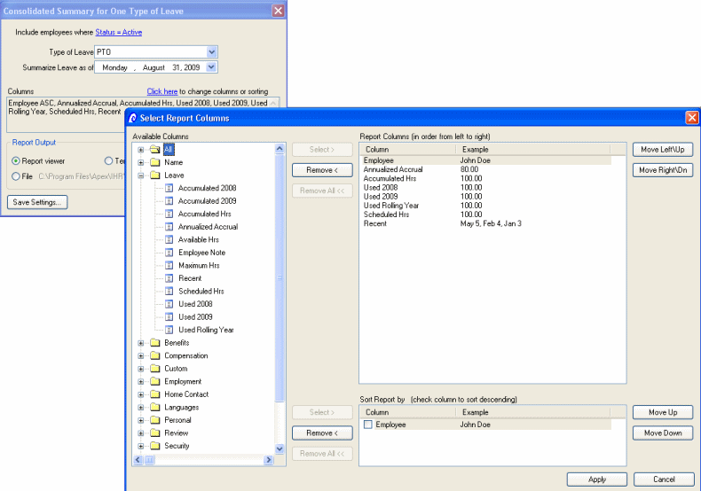
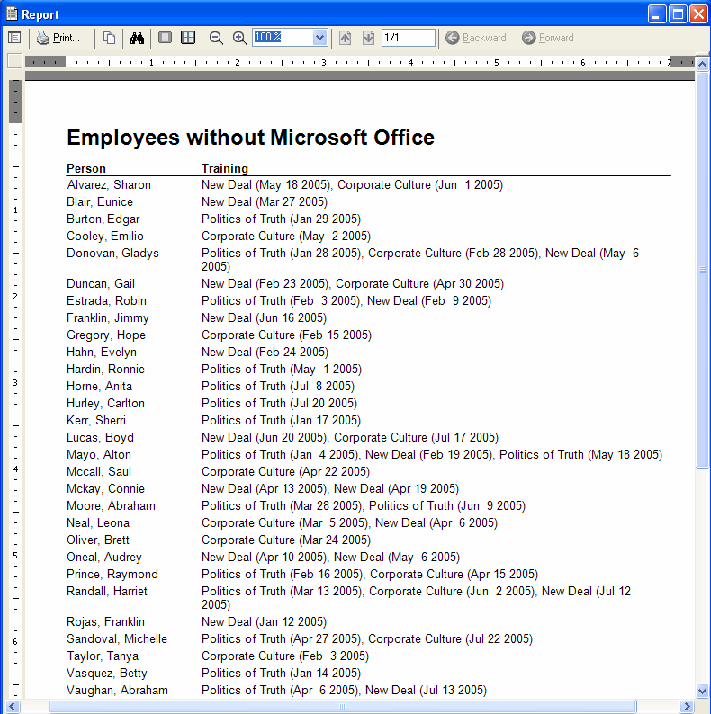

|
||||||||||||||||||

|
||||||||||||||||||
The Navigation Window allows you to quickly access employee information. The top Toolbar allows fast access to company info, reminders/tasks, leave requests, time sheet information, benefits and hundreds of reports. Icons below the top Toolbar allow you to access all employees at once with the People Grid, enter leave requests, record tardies, edit benefits, add employees, etc. Icons The Employee List TreeView (left) organizes employees into Folders by Manager (shown), Department, Division, Location, Active, or Inactive Employees. Double click on an employee to access the Employee Window.  Price iHR
| Download free trial | Learn about Web Self Serve Add-on Price iHR
| Download free trial | Learn about Web Self Serve Add-on
Employee Window The Employee Window provides instant access to anything and everything about an individual. The Employee Window allows you to quickly access leave (shown below), employment records, reviews, salary info, benefits, attendance, emergency contacts, etc. Track everything from certifications and education to skills and unions. Employee information can be updated one employee at a time via the Employee Window, or all employees at once via the People Grid. 
Price iHR | Download free trial | Learn about Web Self Serve Add-on People Grid The People Grid lets you use one window to easily enter information for several employees. Create and customize views including departmental rosters and organizational information. Click the Open to access a single employee. Print your company-wide roster instantly. Select desired columns to create customized reports.  Price iHR | Download free trial | Learn about Web Self Serve Add-on Flexible Reporting Create custom reports by defining column layouts, sort order, and included employees.  Track available leave, used leave, and create Leave Reports. The Leave analysis screen allows you to quickly identify percent working time lost and employees who are frequently absent.
Track Benefits, COBRA and tax-deferred retirement plans. iHR totals employer and employee premiums and it looks up premiums by provider, plan, coverage and zip code. Easily track payments, eligibility and enrollment dates with automatic reminders.
Track licensing, training and certifications for your staff. Receive automatic reminders when certifications are about to expire. Quickly identify all of the employees in a department who have not taken a training class.  TheEquipment List provides an easy way to track company equipment. Record dates of service and purchase price. Use a new hire and termination checklist to keep track of labtops, cell phones, keys, handhelds, etc. iHR makes it easy to check equipment in and out and schedule check-in due dates with automatic reminders.
iHR is built on an open but secure SQL database that supportsIntegrated Windows Security. With iHR you can easily assign access to some employees but not others. Create roles and then assign employees or groups to each role. Set different permissions for each role. This means that some employees can only read sensitive information while others have permission to view and edit (read/write) information. Some employees might not have permission to view or edit certain information.  Price
iHR | Download free trial | Learn about Web Self-Serve Add-on Price
iHR | Download free trial | Learn about Web Self-Serve Add-on
|